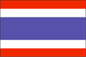
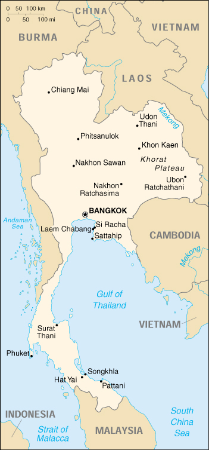

{kind=link}


| Thailand |  |
|
|  | |
| Introduction |
Background: A unified Thai kingdom was established in the mid-14th century; it was known as Siam until 1939. Thailand is the only southeast Asian country never to have been taken over by a European power. A bloodless revolution in 1932 led to a constitutional monarchy. In alliance with Japan during World War II, Thailand became a US ally following the conflict.
| Geography |
Location: Southeastern Asia, bordering the Andaman Sea and the Gulf of Thailand, southeast of Burma
Geographic coordinates: 15 00 N, 100 00 E
Map references: Southeast Asia
Area:
total:
514,000 sq km
land:
511,770 sq km
water:
2,230 sq km
Area - comparative: slightly more than twice the size of Wyoming
Land boundaries:
total:
4,863 km
border countries:
Burma 1,800 km, Cambodia 803 km, Laos 1,754 km, Malaysia 506 km
Coastline: 3,219 km
Maritime claims:
continental shelf:
200-m depth or to the depth of exploitation
exclusive economic zone:
200 nm
territorial sea:
12 nm
Climate: tropical; rainy, warm, cloudy southwest monsoon (mid-May to September); dry, cool northeast monsoon (November to mid-March); southern isthmus always hot and humid
Terrain: central plain; Khorat Plateau in the east; mountains elsewhere
Elevation extremes:
lowest point:
Gulf of Thailand 0 m
highest point:
Doi Inthanon 2,576 m
Natural resources: tin, rubber, natural gas, tungsten, tantalum, timber, lead, fish, gypsum, lignite, fluorite, arable land
Land use:
arable land:
34%
permanent crops:
6%
permanent pastures:
2%
forests and woodland:
26%
other:
32% (1993 est.)
Irrigated land: 44,000 sq km (1993 est.)
Natural hazards: land subsidence in Bangkok area resulting from the depletion of the water table; droughts
Environment - current issues: air pollution from vehicle emissions; water pollution from organic and factory wastes; deforestation; soil erosion; wildlife populations threatened by illegal hunting
Environment - international agreements:
party to:
Climate Change, Endangered Species, Hazardous Wastes, Marine Life Conservation, Nuclear Test Ban, Ozone Layer Protection, Tropical Timber 83, Tropical Timber 94, Wetlands
signed, but not ratified:
Biodiversity, Climate Change-Kyoto Protocol, Law of the Sea
Geography - note: controls only land route from Asia to Malaysia and Singapore
| People |
Population:
61,230,874
note:
estimates for this country explicitly take into account the effects of excess mortality due to AIDS; this can result in lower life expectancy, higher infant mortality and death rates, lower population and growth rates, and changes in the distribution of population by age and sex than would otherwise be expected (July 2000 est.)
Age structure:
0-14 years:
24% (male 7,386,231; female 7,107,010)
15-64 years:
70% (male 21,102,363; female 21,714,411)
65 years and over:
6% (male 1,726,043; female 2,194,816) (2000 est.)
Population growth rate: 0.93% (2000 est.)
Birth rate: 16.86 births/1,000 population (2000 est.)
Death rate: 7.53 deaths/1,000 population (2000 est.)
Net migration rate: 0 migrant(s)/1,000 population (2000 est.)
Sex ratio:
at birth:
1.05 male(s)/female
under 15 years:
1.04 male(s)/female
15-64 years:
0.97 male(s)/female
65 years and over:
0.79 male(s)/female
total population:
0.97 male(s)/female (2000 est.)
Infant mortality rate: 31.48 deaths/1,000 live births (2000 est.)
Life expectancy at birth:
total population:
68.55 years
male:
65.29 years
female:
71.97 years (2000 est.)
Total fertility rate: 1.88 children born/woman (2000 est.)
Nationality:
noun:
Thai (singular and plural)
adjective:
Thai
Ethnic groups: Thai 75%, Chinese 14%, other 11%
Religions: Buddhism 95%, Muslim 3.8%, Christianity 0.5%, Hinduism 0.1%, other 0.6% (1991)
Languages: Thai, English (secondary language of the elite), ethnic and regional dialects
Literacy:
definition:
age 15 and over can read and write
total population:
93.8%
male:
96%
female:
91.6% (1995 est.)
| Government |
Country name:
conventional long form:
Kingdom of Thailand
conventional short form:
Thailand
Data code: TH
Government type: constitutional monarchy
Capital: Bangkok
Administrative divisions: 76 provinces (changwat, singular and plural); Amnat Charoen, Ang Thong, Buriram, Chachoengsao, Chai Nat, Chaiyaphum, Chanthaburi, Chiang Mai, Chiang Rai, Chon Buri, Chumphon, Kalasin, Kamphaeng Phet, Kanchanaburi, Khon Kaen, Krabi, Krung Thep Mahanakhon (Bangkok), Lampang, Lamphun, Loei, Lop Buri, Mae Hong Son, Maha Sarakham, Mukdahan, Nakhon Nayok, Nakhon Pathom, Nakhon Phanom, Nakhon Ratchasima, Nakhon Sawan, Nakhon Si Thammarat, Nan, Narathiwat, Nong Bua Lamphu, Nong Khai, Nonthaburi, Pathum Thani, Pattani, Phangnga, Phatthalung, Phayao, Phetchabun, Phetchaburi, Phichit, Phitsanulok, Phra Nakhon Si Ayutthaya, Phrae, Phuket, Prachin Buri, Prachuap Khiri Khan, Ranong, Ratchaburi, Rayong, Roi Et, Sa Kaeo, Sakon Nakhon, Samut Prakan, Samut Sakhon, Samut Songkhram, Sara Buri, Satun, Sing Buri, Sisaket, Songkhla, Sukhothai, Suphan Buri, Surat Thani, Surin, Tak, Trang, Trat, Ubon Ratchathani, Udon Thani, Uthai Thani, Uttaradit, Yala, Yasothon
Independence: 1238 (traditional founding date; never colonized)
National holiday: Birthday of His Majesty the King, 5 December (1927)
Constitution: new constitution signed by King PHUMIPHON on 11 October 1997
Legal system: based on civil law system, with influences of common law; has not accepted compulsory ICJ jurisdiction
Suffrage: 18 years of age; universal and compulsory
Executive branch:
chief of state:
King PHUMIPHON Adunyadet (since 9 June 1946)
head of government:
Prime Minister CHUAN Likphai (since 15 November 1997)
cabinet:
Council of Ministers
note:
there is also a Privy Council
elections:
none; the monarch is hereditary; prime minister designated from among the members of the House of Representatives; following a national election for the House of Representatives, the leader of the party that can organize a majority coalition usually becomes prime minister
Legislative branch:
bicameral National Assembly or Rathasapha consists of the Senate or Wuthisapha (a 253-member appointed body which will be phased into a 200-member elected body starting in March 2000; members serve six-year terms) and the House of Representatives or Sapha Phuthaen Ratsadon (currently has 392 members, but will become a 500-member body after the next election; members elected by popular vote to serve four-year terms)
elections:
House of Representatives - last held 17 November 1996 (next scheduled to be held by 17 November 2000, but may be held earlier)
election results:
House of Representatives - percent of vote by party - NA; seats by party - NAP 125, DP 123, NDP 52, TNP 39, SAP 20, TCP 18, SP 8, LDP 4, MP 2, PDP 1
Judicial branch: Supreme Court (Sandika), judges appointed by the monarch
Political parties and leaders: Democratic Party or DP (Prachathipat Party) [CHUAN Likphai]; Liberal Democratic Party or LDP (Seri Tham) [PHINIT Charusombat]; Mass Party or MP [CHALERM Yoobamrung, SOPHON Petchsavang]; National Development Party or NDP (Chat Phattana) [KON Thappharangsi]; New Aspiration Party or NAP (Khwamwang Mai) [Gen. CHAWALIT Yongchaiyut]; Phalang Dharma Party or PDP (Phalang Tham) [CHAIWAT Sinsuwong]; Social Action Party or SAP (Kitsangkhom Party) [SUWIT Khunkitti]; Solidarity Party or SP (Ekkaphap Party) [CHAIYOT Sasomsap]; Thai Citizen's Party or TCP (Prachakon Thai) [SAMAK Sunthonwet]; Thai Nation Party or TNP (Chat Thai Party) [BANHAN Sinlapa-acha]; Thai Rak Thai Party or TRT [THAKSIN Chinnawat]
International organization participation: APEC, AsDB, ASEAN, CCC, CP, ESCAP, FAO, G-77, IAEA, IBRD, ICAO, ICFTU, ICRM, IDA, IFAD, IFC, IFRCS, IHO, ILO, IMF, IMO, Inmarsat, Intelsat, Interpol, IOC, IOM, ISO, ITU, NAM, OAS (observer), OPCW, PCA, UN, UNCTAD, UNESCO, UNHCR, UNIDO, UNIKOM, UNITAR, UNMIBH, UNTAET, UNU, UPU, WCL, WFTU, WHO, WIPO, WMO, WToO, WTrO
Diplomatic representation in the US:
chief of mission:
Ambassador NIT Phibunsongkhram (due to leave March 2000)
chancery:
1024 Wisconsin Avenue NW, Washington, DC 20007
telephone:
[1] (202) 944-3600
FAX:
[1] (202) 944-3611
consulate(s) general:
Chicago, Los Angeles, and New York
Diplomatic representation from the US:
chief of mission:
Ambassador Richard HECKLINGER
embassy:
120 Wireless Road, Bangkok
mailing address:
APO AP 96546
telephone:
[66] (2) 205-4000
FAX:
[66] (2) 254-2990
consulate(s) general:
Chiang Mai
Flag description: five horizontal bands of red (top), white, blue (double width), white, and red
| Economy |
Economy - overview: After enjoying the world's highest growth rate from 1985 to 1995 - averaging almost 9% annually - increased speculative pressure on Thailand's currency in 1997 led to a crisis that uncovered financial sector weaknesses and forced the government to float the baht. Long pegged at 25 to the dollar, the baht reached its lowest point of 56 to the dollar in January 1998 and the economy contracted by nearly 10% that same year. Thailand entered a recovery stage in 1999; preliminary estimates are that the economy expanded by about 4% - most forecasters expect similar growth in 2000. Beginning in 1999 the baht stabilized and inflation and interest rates began coming down. The CHUAN government has cooperated closely with the IMF and adhered to its mandated recovery program, including passage of new bankruptcy and foreclosure laws. The regional recovery boosted exports, while fiscal stimulus buoyed domestic demand. While slow progress has been made in recapitalizing the financial sector, tough measures - such as implementing a privatization plan and forcing the private sector to restructure - remain undone.
GDP: purchasing power parity - $388.7 billion (1999 est.)
GDP - real growth rate: 4% (1999 est.)
GDP - per capita: purchasing power parity - $6,400 (1999 est.)
GDP - composition by sector:
agriculture:
12%
industry:
39%
services:
49% (1997 est.)
Population below poverty line: 12.5% (1998 est.)
Household income or consumption by percentage share:
lowest 10%:
2.5%
highest 10%:
37.1% (1992)
Inflation rate (consumer prices): 2.4% (1999 est.)
Labor force: 32.6 million (1997 est.)
Labor force - by occupation: agriculture 54%, industry 15%, services 31% (1996 est.)
Unemployment rate: 4.5% (1998 est.)
Budget:
revenues:
$20 billion
expenditures:
$23 billion, including capital expenditures of $NA (1999 est.)
Industries: tourism; textiles and garments, agricultural processing, beverages, tobacco, cement, light manufacturing, such as jewelry; electric appliances and components, computers and parts, integrated circuits, furniture, plastics; world's second-largest tungsten producer and third-largest tin producer
Industrial production growth rate: 12.6% (1999 est.)
Electricity - production: 85 billion kWh (1999)
Electricity - production by source:
fossil fuel:
91.44%
hydro:
8.56%
nuclear:
0%
other:
0% (1998)
Electricity - consumption: 80.293 billion kWh (1999)
Electricity - exports: 138 million kWh (1998)
Electricity - imports: 700 million kWh (1998)
Agriculture - products: rice, cassava (tapioca), rubber, corn, sugarcane, coconuts, soybeans
Exports: $58.5 billion (f.o.b., 1999 est.)
Exports - commodities: computers and parts, textiles, rice
Exports - partners: US 22.3%, Japan 13.7%, Singapore 8.6%, Hong Kong 5.1%, Netherlands 4.0%, UK 3.9%, Malaysia 3.3%, China 3.2%, Taiwan 3.2%, Germany 2.9% (1998)
Imports: $45 billion (f.o.b., 1999 est.)
Imports - commodities: capital goods, intermediate goods and raw materials, consumer goods, fuels
Imports - partners: Japan 23.6%, US 14.0%, Singapore 5.5%, Malaysia 5.1%, Taiwan 5.2%, Germany 4.2%, China 4.2%, South Korea 3.5%, Oman 2.6%, Indonesia 2.1% (1998)
Debt - external: $80 billion (1999 est.)
Economic aid - recipient: $1.732 billion (1995)
Currency: 1 baht (B) = 100 satang
Exchange rates: baht (B) per US$1 - 37.349 (January 2000), 37.844 (1999), 41.359 (1998), 31.364 (1997), 25.343 (1996), 24.915 (1995)
Fiscal year: 1 October - 30 September
| Communications |
Telephones - main lines in use: 5.4 million (1998)
Telephones - mobile cellular: 2.3 million (1998)
Telephone system:
service to general public adequate, but investment in technological upgrades reduced by recession; bulk of service to government activities provided by multichannel cable and microwave radio relay network
domestic:
microwave radio relay and multichannel cable; domestic satellite system being developed
international:
satellite earth stations - 2 Intelsat (1 Indian Ocean and 1 Pacific Ocean)
Radio broadcast stations: AM 204, FM 334, shortwave 6 (1999)
Radios: 13.96 million (1997)
Television broadcast stations: 5 (all in Bangkok; plus 131 repeaters) (1997)
Televisions: 15.19 million (1997)
Internet Service Providers (ISPs): 13 (1999)
| Transportation |
Railways:
total:
3,940 km
narrow gauge:
3,940 km 1.000-m gauge (99 km double track)
Highways:
total:
64,600 km
paved:
62,985 km
unpaved:
1,615 km (1996 est.)
Waterways: 3,999 km principal waterways; 3,701 km with navigable depths of 0.9 m or more throughout the year; numerous minor waterways navigable by shallow-draft native craft
Pipelines: petroleum products 67 km; natural gas 350 km
Ports and harbors: Bangkok, Laem Chabang, Pattani, Phuket, Sattahip, Si Racha, Songkhla
Merchant marine:
total:
299 ships (1,000 GRT or over) totaling 1,834,809 GRT/2,949,558 DWT
ships by type:
bulk 39, cargo 135, chemical tanker 3, combination bulk 1, container 13, liquified gas 19, multi-functional large load carrier 3, passenger 1, petroleum tanker 63, refrigerated cargo 13, roll-on/roll-off 2, short-sea passenger 2, specialized tanker 5 (1999 est.)
Airports: 106 (1999 est.)
Airports - with paved runways:
total:
56
over 3,047 m:
6
2,438 to 3,047 m:
11
1,524 to 2,437 m:
17
914 to 1,523 m:
18
under 914 m:
4 (1999 est.)
Airports - with unpaved runways:
total:
50
1,524 to 2,437 m:
1
914 to 1,523 m:
16
under 914 m:
33 (1999 est.)
Heliports: 3 (1999 est.)
| Military |
Military branches: Royal Thai Army, Royal Thai Navy (includes Royal Thai Marine Corps), Royal Thai Air Force, Paramilitary Forces
Military manpower - military age: 18 years of age
Military manpower - availability:
males age 15-49:
17,621,080 (2000 est.)
Military manpower - fit for military service:
males age 15-49:
10,603,857 (2000 est.)
Military manpower - reaching military age annually:
males:
580,014 (2000 est.)
Military expenditures - dollar figure: $2.075 billion (FY97/98)
Military expenditures - percent of GDP: 1.3% (FY97/98)
| Transnational Issues |
Disputes - international: parts of the border with Laos are indefinite; maritime boundary with Vietnam resolved, August 1997; parts of border with Cambodia are indefinite; maritime boundary with Cambodia not clearly defined; sporadic conflict with Burma over alignment of border
Illicit drugs: a minor producer of opium, heroin, and marijuana; major illicit transit point for heroin en route to the international drug market from Burma and Laos; eradication efforts have reduced the area of cannabis cultivation and shifted some production to neighboring countries; opium poppy cultivation has been reduced by eradication efforts; also a drug money-laundering center; minor role in amphetamine production for regional consumption; increasing indigenous abuse of methamphetamines and heroin